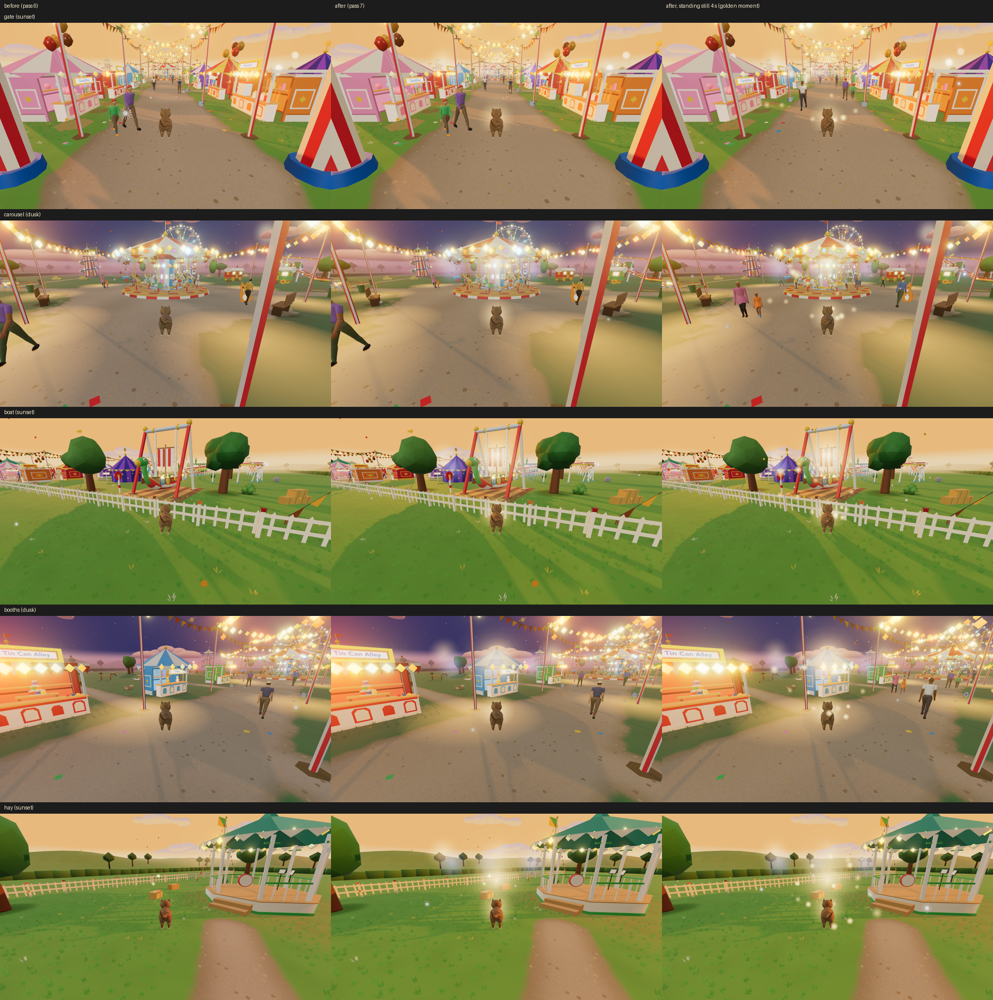

One row per vista (verify-fair.html with ?mood=sunset|dusk, shots p7-gate, p7-carousel, p7-boat, p7-booths, p7-hay; the right column adds ?hold=4, standing still 4 s). Play camera: 70 degrees, 4.5 m behind, 2.2 m up, 1280x720.
What changed at a spot (near it and facing its focal point): the sun, fill and lawn bounce warm a little; three bands of haze (cool near, the sky's own colour in the middle, gold far) and a shaft of warm light run from the focal point to her; the focal point glows softly; a warm halo stands behind her so her fur reads; after 3 s still, sparkles rise round her with a soft chime (once per spot per visit).
Honest notes: the change is a mood, not a new object, so the right two columns differ in light and glow rather than in shapes (the boat row is the quietest). There is no true edge-dimming: the game has no vignette uniform and a post pass was out of bounds, so only the warm grade and the haze stand in. Foreground framing (bunting, balloons, tent edges) was not recoloured or rescaled: the gate and booth shots already frame well; nothing was changed there. The chime and the sparkles' twinkle cannot be seen in a still.
